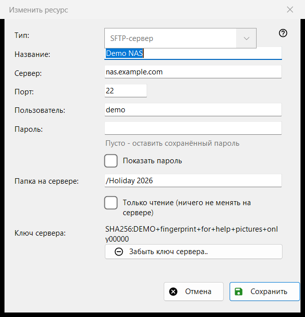
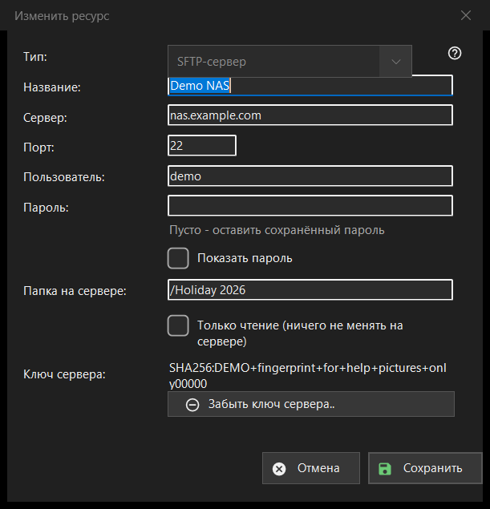

Изменить ресурс
Назначение
Форма одного сохранённого сервера или сетевой папки. «Добавить..» в списке ресурсов открывает её пустой под названием «Новый ресурс», «Изменить..» - заполненной под названием «Изменить ресурс», а адрес sftp://, набранный в строке папки, открывает её с уже заполненными полями.


Порядок действий
- Выберите тип: SFTP-сервер или сетевая папка (SMB).
- Задайте название и введите адрес сервера и порт либо сетевой путь.
- Введите имя пользователя и пароль.
- Укажите папку на сервере и отметьте «только чтение», если там ничего нельзя менять.
- Нажмите «Сохранить».
Элементы окна
Тип
«Тип:» выбирается при создании ресурса: «SFTP-сервер» (порт 22, папка /) или «Сетевая папка (SMB)». У сохранённого ресурса список недоступен: пароль и ключ сервера привязаны к одному типу. Для SMB поле адреса называется «Сетевая папка:» и принимает путь вида \\сервер\папка; поля порта и папки есть только у SFTP.
Название, сервер и порт
«Название:» - то, что видно в списке; если оно пустое, берётся адрес сервера. «Сервер:» - имя или IP-адрес, «Порт:» - число от 1 до 65535. Смена сервера или порта отбрасывает другие адреса, пришедшие с импортированным ресурсом, чтобы сохранённый пароль не ушёл на адрес, которого вы не вводили.
Пользователь и пароль
«Пользователь:» и «Пароль:». Пароль хранится в зашифрованном виде для вашей учётной записи Windows; в списке лежит только ссылка на него. У сохранённого ресурса поле пустое с подсказкой «Пусто - оставить сохранённый пароль»: вводите что-то, только чтобы заменить пароль. «Показать пароль» вначале выключено. Для нового ресурса пароль обязателен.
Папка и только чтение
«Папка на сервере:» - папка, которую просмотрщик открывает первой, путь, начинающийся с /. «Только чтение (ничего не менять на сервере)» заставляет просмотрщик считать ресурс доступным только для чтения: ничего нельзя переносить или копировать в него, удалять и переименовывать в нём.
Ключ сервера
«Ключ сервера:» показывает отпечаток, запомненный для этого сервера, а если его нет - сообщает, что он появится при первом подключении, где вы его подтверждаете. Кнопка «Забыть ключ сервера..» видна, только когда ключ запомнен. Она сначала спрашивает (ответ по умолчанию «Нет») и поясняет: если сервер переустановили, это нормально, иначе кто-то может выдавать себя за сервер. Стирается только ключ: при следующем подключении программа покажет новый отпечаток и спросит снова.
Сохранить
«Сохранить» проверяет поля и красным под ними называет первую проблему: адрес, порт, папку, имя пользователя или отсутствующий пароль. «Отмена» закрывает форму без изменений.